Zadání
Je dána booleovská formule F promìnných X=(x1,
x2, ... , xn) v
konjunktivní normální formì (tj. souèin souètù).
Dále jsou dány celoèíselné kladné
váhy W=(w1, w2, ... , wn). Najdìte
ohodnocení Y=(y1, y2, ... , yn) promìnných x1, x2, ... , xn tak, aby F(Y)=1
a souèet vah promìnných, které jsou ohodnoceny
jednièkou, byl maximální.
Je pøípustné se omezit na formule, v nichž má
každá formule právì 3 literály (problém 3
SAT). Takto
omezený problém je stejnì tìžký, ale možná
se lépe programuje a lépe se posuzuje obtížnost
instance (viz Selmanova prezentace v odkazech).
Popis algoritmu
Z pokroèilých iterativních metod jsem si vybral algoritmus simulované ochlazování. Je popsán "vývojovými diagramy" na následujících obrázcích.
| 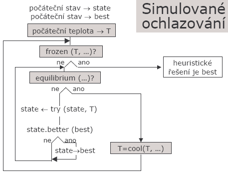 |  |
Pokusím se algoritmus popsat slovnì. Jedná se o 2 vnoøené cykly. Na zaèátku je nastaveno nìjaké øešení a poèáteèní teplota, která se ve venkovním cyklu postupnì snižuje. Teplotou je dána ochota algoritmu pøijmout horší øešení. Tím se mùže algoritmus vymanit z lokálního minima. Ve vnitøním cyklu se hledá nové øešení. To je popsáno na obrázku jako funkce "try". Náhodnì vygenerujeme nové øešení (oproti úloze "Batoh" pøijímáme i øešení, kdy je formule nesplnìná). Pokud je lepší než doposud nalezené, toto øešení pøijmeme. Pokud je horší tak jej pøijmeme s urèitou pravdìpodobností, která je dána aktuální teplotou a velikostí zhoršení ceny. Algoritmus konèí pokud se teplota sníží na úroveò teploty tuhnutí. Pro správnou funkci algoritmu je velice dùležité nastavit parametry (poèáteèní teplota, teplota tuhnutí, rychlost tuhnutí, velikost equilibria).
Implementace
Formát vstupního souboru
Formát vstupního souboru jsem pøevzal od Martina Prchlíka. Oproti DIMACS CNF formátu obsahuje váhy promìnných a nejlepší øešení dodané BruteForcem. Popis formátu (øádkù):
- 1. - prázdný øádek
- 2. - správné øešení
- 3. - poèet_promìnných poèet_klausulí poèet_promìnných_v_klausuli
- 4 - n. - jednotlivé klausule (èíslo je index promìnné, èíslováno od 1, pokud je èíslo záporné znamená negovanou promìnnou
- n+1 - váhy promìnných
Zdrojové kódy (C#)
- MPFormatInputReader.cs - Reader vstupního formátu, vrací tøídu SAT
- Program.cs - obalující kód pro experimenty, mìøení èasu a chyb
- SAT.cs - tøída reprezentující data formule, váhy, metody pro vyhodnocení splnitelnosti a ohodnocení stavu
- SimAnneal.cs - Algoritmus simulované ochlazování, v constructoru oèekává tøídu SAT a parametry simulovaného ochlazování
Ohodnocovací funkce getGrant
Návrh této funkce je velice dùležitý pro správnou funkci celého algoritmu. Jsou na ní kladeny tyto požadavky:
- Zvýhodòovat promìnné s vìtší váhou
- Znevýhodòovat nesplnìné klausule
Namìøené hodnoty a výsledky
Aby bylo možné správnì nastavit parametry algoritmu je nutné experimentovat.
Pøi experimentech jsem sledoval graf prùchodu stavovým prostorem, èasovou nároènost a relativní chybu.
Pro výpoèet relativní chyby jsem použil hodnoty ze vstupního souboru.
Z dùvodu èasové nároènosti mám k dispozici data pro 20 promìnných a 50, 75 a 90 klausulí.
Experimenty jsou shrnuty v následujících tabulkách a grafech.
Pro pøehlednost jsem použil tyto zkratky:
T0 = poèáteèní teplota
Tf = teplota tuhnutí
dT = zmìna teploty
equ = equilibrium
NF = øešení nenalezeno
time = èas v ms
Avg (AvgErr) = prùmìrná relativní chyba výsledku z k mìøení
Best (BestErr) = nejnižší relativní chyba vybraná z k mìøení
Pokud není uvedeno jinak, jsou nastaveny toto hodnoty: T0_k = 0.1,Tf = 1,dT = 0.9, equ_k = 1. Algoritmus byl na každé instanci spuštìn 5x a výsledná relativní chyba a èas je prùmìr z výsledkù algoritmu. Takto bylo postupováno pro každou instanci (50 instancí pro každou velikost problému).
Teplota tuhnutí (Tf) a rychlost zmìny (dT) jsou zadány absolutnì. Naproti tomu poèáteèní teplota (T0) a velikost equilibria (equ) jsou vztaženy k velikosti instance (mìníme pouze multiplikativní konstantu) takto:
T0 = T0_k * var_count * maxW;
kde
equ = equ_k * var_count;
var_count je poèet promìnných a maxW je maximální váha promìnné.
Mìøil jsem na NTB s procesorem Centino 1.4GHz, nastavení max Performance pøi napájení z adaptéru. Použitý OS: Windows XP SP2 s .net Framework 2.
Nastavení rychlosti ochlazování
Pøi tomto experimentu jsem mìnil dT od 0.5 do 0.995
Tabulka è.1
| dT | 50 klausulí | 75 klausulí | 90 klausulí | |||||||||
|---|---|---|---|---|---|---|---|---|---|---|---|---|
| NF | time | AvgErr | BestErr | NF | time | AvgErr | BestErr | NF | time | AvgErr | BestErr | |
| 0,995 | 0,00% | 223,7 | 1,70% | 0,20% | 0,00% | 275,9 | 2,90% | 0,20% | 0,80% | 316,2 | 1,90% | 0,80% |
| 0,945 | 0,00% | 17,3 | 4,40% | 0,60% | 0,40% | 25,7 | 4,20% | 1,80% | 4,80% | 27,7 | 1,50% | 0,50% |
| 0,898 | 0,00% | 9,5 | 4,20% | 0,70% | 2,40% | 13,6 | 4,20% | 1,70% | 5,20% | 14,9 | 1,30% | 2,10% |
| 0,853 | 0,00% | 6,3 | 6,50% | 1,40% | 1,60% | 8,7 | 4,40% | 3,70% | 7,20% | 10,1 | 1,30% | 0,90% |
| 0,81 | 0,00% | 4,6 | 6,60% | 2,70% | 3,20% | 6,4 | 3,80% | 4,00% | 9,60% | 7,5 | 0,90% | 0,70% |
| 0,77 | 0,00% | 4 | 7,20% | 3,90% | 5,20% | 5,2 | 3,30% | 4,30% | 10,00% | 6,2 | 0,50% | 0,80% |
| 0,731 | 0,00% | 3,1 | 6,90% | 4,30% | 5,60% | 4,4 | 3,60% | 6,00% | 11,60% | 4,8 | 0,60% | 3,50% |
| 0,695 | 0,40% | 2,9 | 5,50% | 4,70% | 6,80% | 3,8 | 2,80% | 4,70% | 12,00% | 4,1 | 0,70% | 3,00% |
| 0,66 | 0,00% | 2,4 | 7,70% | 5,00% | 4,80% | 3,3 | 3,50% | 7,40% | 13,20% | 3,8 | 1,60% | 6,20% |
| 0,627 | 0,40% | 2,3 | 9,00% | 4,00% | 6,80% | 2,8 | 3,40% | 5,90% | 13,20% | 3,4 | 0,90% | 3,30% |
| 0,596 | 0,80% | 2 | 5,30% | 4,30% | 8,00% | 3 | 3,30% | 4,70% | 14,40% | 3,2 | 0,10% | 0,60% |
| 0,566 | 2,80% | 1,9 | 5,90% | 3,30% | 9,20% | 2,8 | 2,90% | 6,90% | 12,00% | 2,8 | 0,90% | 2,30% |
| 0,538 | 2,00% | 1,6 | 8,90% | 8,00% | 10,80% | 2,3 | 2,70% | 6,10% | 12,80% | 2,4 | 0,50% | 2,20% |
| 0,511 | 1,60% | 1,5 | 10,10% | 10,60% | 10,80% | 1,9 | 2,30% | 9,00% | 12,40% | 2,4 | 1,00% | 3,00% |
Grafy è.1
| relativní chyba | # nenalezených stavù | èasové složitost | prùchod stavovým prostorem |
| 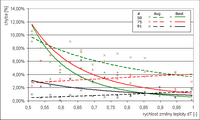 | 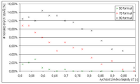 | 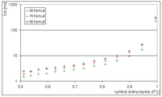 | 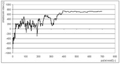 |
Nastavení velikosti equilibria
Pøi tomto experimentu jsem mìnil equ_k od 1 do 10. Pouze pøipomenu, že velikost equilibria je vztažená k velikosti instance a to takto:equ = equ_k * var_count.
Tabulka è.2
| equ_k | 50 klausulí | 75 klausulí | 90 klausulí | |||||||||
|---|---|---|---|---|---|---|---|---|---|---|---|---|
| NF | time | AvgErr | BestErr | NF | time | AvgErr | BestErr | NF | time | AvgErr | BestErr | |
| 1 | 0,00% | 10,9 | 4,60% | 0,50% | 1,20% | 13,1 | 3,30% | 1,70% | 6,00% | 15,2 | 1,50% | 0,90% |
| 2 | 0,00% | 19,5 | 3,40% | 0,20% | 0,00% | 26,2 | 4,50% | 3,00% | 2,40% | 30,1 | 2,00% | 2,10% |
| 3 | 0,00% | 28,9 | 2,90% | 0,20% | 0,00% | 39,2 | 4,50% | 1,30% | 2,40% | 45 | 2,30% | 1,40% |
| 4 | 0,00% | 38,8 | 3,10% | 0,40% | 0,00% | 52,3 | 3,90% | 1,10% | 2,80% | 60 | 1,80% | 0,50% |
| 5 | 0,00% | 47,8 | 2,80% | 0,30% | 0,40% | 65,1 | 3,40% | 0,70% | 3,20% | 76,9 | 1,90% | 1,10% |
| 6 | 0,00% | 57,4 | 2,00% | 0,10% | 0,00% | 79,8 | 3,30% | 1,10% | 0,80% | 90,6 | 1,80% | 1,30% |
| 7 | 0,00% | 68,9 | 2,30% | 0,20% | 0,40% | 93,1 | 3,60% | 0,20% | 1,20% | 105,4 | 2,30% | 0,80% |
| 8 | 0,00% | 77,5 | 2,40% | 0,40% | 0,00% | 104,8 | 3,50% | 1,20% | 1,20% | 122,3 | 2,30% | 0,70% |
| 9 | 0,00% | 85,7 | 2,20% | 0,30% | 0,00% | 119,6 | 3,50% | 0,70% | 2,80% | 139,4 | 1,90% | 0,50% |
| 10 | 0,00% | 97,9 | 2,00% | 0,20% | 0,40% | 132,6 | 3,40% | 0,80% | 2,40% | 157,5 | 2,00% | 0,50% |
Grafy è.2
| relativní chyba | # nenalezených stavù | prùchod stavovým prostorem |
| 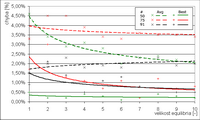 | 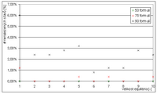 | 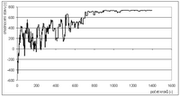 |
Nastavení teploty tuhnutí
Pøi tomto experimentu jsem mìnil Tf od 1 do 10.Tabulka è.3
| Tf | 50 klausulí | 75 klausulí | 90 klausulí | |||||||||
|---|---|---|---|---|---|---|---|---|---|---|---|---|
| NF | time | AvgErr | BestErr | NF | time | AvgErr | BestErr | NF | time | AvgErr | BestErr | |
| 1 | 0,00% | 10,5 | 4,50% | 0,90% | 1,20% | 13,6 | 4,00% | 1,30% | 5,20% | 15,8 | 1,50% | 1,20% |
| 2 | 0,00% | 8,6 | 5,60% | 1,00% | 1,60% | 13 | 3,30% | 2,30% | 5,20% | 13,3 | 1,80% | 1,70% |
| 3 | 0,00% | 7,7 | 5,50% | 1,00% | 1,20% | 11,9 | 3,20% | 2,30% | 6,00% | 12,6 | 1,20% | 1,40% |
| 4 | 0,00% | 7 | 5,00% | 0,90% | 1,20% | 10,4 | 3,50% | 0,70% | 6,00% | 11,7 | 1,40% | 1,20% |
| 5 | 0,00% | 7,2 | 4,00% | 0,50% | 1,60% | 9,8 | 5,00% | 2,30% | 5,20% | 11,3 | 1,20% | 0,40% |
| 6 | 0,00% | 6,5 | 4,60% | 1,00% | 2,00% | 8,9 | 4,00% | 1,90% | 6,00% | 10,3 | 1,70% | 3,70% |
| 7 | 0,40% | 6 | 5,40% | 2,40% | 3,20% | 9,4 | 3,30% | 0,70% | 5,60% | 9,7 | 1,30% | 1,00% |
| 8 | 0,00% | 5,6 | 7,10% | 1,40% | 2,00% | 8,2 | 4,70% | 2,30% | 5,20% | 9,4 | 1,30% | 1,50% |
| 9 | 0,00% | 5,8 | 6,30% | 1,90% | 1,20% | 8,5 | 4,70% | 2,90% | 5,60% | 9,3 | 1,30% | 1,20% |
| 10 | 0,40% | 5,6 | 6,60% | 1,40% | 2,00% | 8,4 | 3,80% | 1,50% | 5,60% | 9,2 | 1,40% | 3,20% |
Graf è.3: Závislost relativní chyby na teplotì tuhnutí
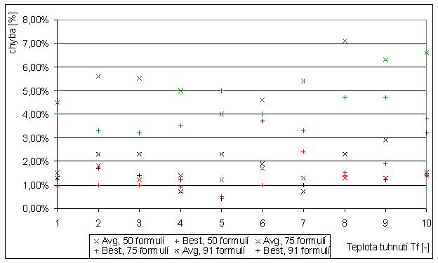
Nastavení poèáteèní teploty
Pøi tomto experimentu jsem mìnil T0 od 0,1 do 1. Pouze pøipomenu, že velikost poèáteèní teploty je vztažena k velikosti instance a to takto:T0 = T0_k * var_count * maxW.
Tabulka è.4
| T0_k | 50 klausulí | 75 klausulí | 90 klausulí | |||||||||
|---|---|---|---|---|---|---|---|---|---|---|---|---|
| NF | time | AvgErr | BestErr | NF | time | AvgErr | BestErr | NF | time | AvgErr | BestErr | |
| 0,1 | 0,00% | 9,9 | 4,90% | 1,00% | 1,20% | 13 | 4,40% | 2,00% | 4,40% | 15,1 | 1,30% | 0,80% |
| 0,2 | 0,00% | 11 | 4,80% | 0,40% | 0,40% | 15,1 | 3,60% | 1,30% | 5,60% | 17 | 1,10% | 2,80% |
| 0,3 | 0,00% | 11,3 | 5,40% | 0,60% | 0,80% | 15,9 | 4,10% | 1,80% | 4,00% | 18,1 | 1,50% | 1,70% |
| 0,4 | 0,00% | 11,8 | 4,90% | 1,00% | 1,20% | 16,4 | 3,70% | 0,40% | 6,40% | 19,3 | 1,50% | 1,00% |
| 0,5 | 0,00% | 11,9 | 5,00% | 1,20% | 2,80% | 16,3 | 3,90% | 1,70% | 6,00% | 19,5 | 1,40% | 1,00% |
| 0,6 | 0,00% | 12,3 | 5,40% | 0,60% | 1,60% | 17,6 | 4,70% | 1,10% | 5,60% | 20,4 | 1,40% | 0,90% |
| 0,7 | 0,00% | 12,6 | 5,00% | 0,80% | 2,00% | 17,9 | 4,00% | 2,20% | 4,40% | 21,4 | 1,50% | 0,70% |
| 0,8 | 0,00% | 12,9 | 5,40% | 0,80% | 0,80% | 17,3 | 4,70% | 2,60% | 5,20% | 20,7 | 1,10% | 1,00% |
| 0,9 | 0,00% | 12,9 | 5,00% | 0,40% | 1,20% | 18,1 | 4,10% | 1,30% | 5,20% | 21,1 | 1,80% | 0,70% |
| 1 | 0,00% | 13,6 | 5,00% | 0,40% | 1,20% | 18,5 | 3,90% | 2,60% | 5,20% | 21,1 | 1,50% | 1,80% |
Grafy è.4
| relativní chyba | # nenalezených stavù | prùchod stavovým prostorem |
| 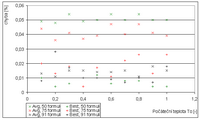 | 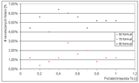 | 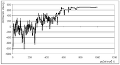 |
Sledování poètu nalezených øešení a relativní chyby na poètu spuštìní algoritmu
Jelikož algoritmus simulované ochlazování je randomizovaný, dává pøi každém spuštìní jiné výsledky. Pokud chceme zlepšit výsledky, spustíme algoritmus vícekrát a z výsledkù vybereme to nejlepší.Graf è.5: Závislost relativní chyby na poètu spuštìní algoritmu
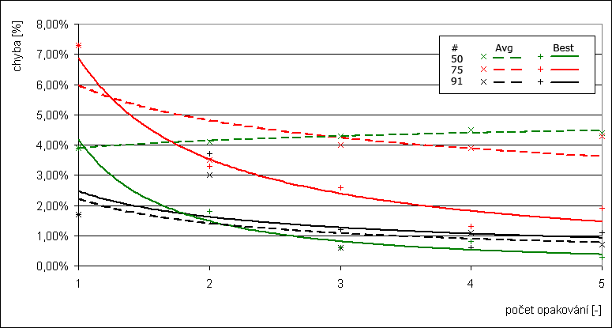
Graf è.6: Závislost # nenalezených øešení na poètu spuštìní algoritmu
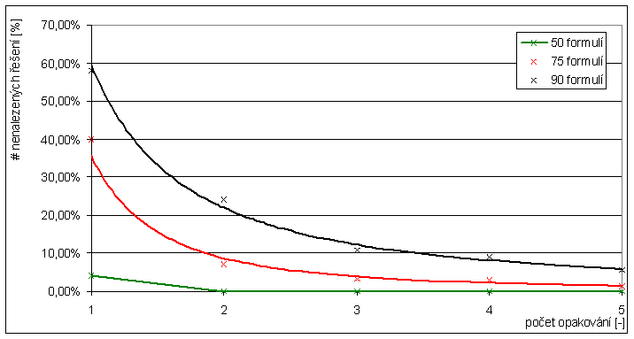
Závìr
Algoritmus simulované ochlazování je pomìrnì snadný na implementaci. Jako nejdùležitìjší krok vidím ve správném navrhnutí ohodnocovací funkce, tak aby algoritmus nutila ke správnému øešení.Vztažení parametrù k poètu promìnných a maximální váze se ukázalo správné. Pro instance, které byly k dispozici (20/50, 20/75, 20/91 - poèet promìnných / poèet klausulí), se ukázalo toto nastavení jako optimální:
- Poèáteèní teplota T0 = 0,1 * var_count * maxW;
- Teplota tuhnutí Tf = 1
- Rychlost ochlazování dT = 0,9
- Velikost equilibria equ = 1 * var_count;
U tohoto algoritmu (stejnì jako u dynamického programování) dopøedu známe poèet iterací cyklu, tudíž mùžeme odhadnout èasovou nároènost. Proto u nìkterých mìøení chybí èasová závislost (chápavý ètenáø ji z popisu algoritmu snadno odvodí). Dále z provedených experimentù mùžeme udìlat tyto závìry:
- Èím blíže dT k 1 tím menší relativní chyba, ale vìtší èasová nároènost.
- Poèáteèní teplotu je vhodné volit jako funkci velikosti instance.
- Teplotu tuhnutí je nejlepší "vykoukat" z grafù pro závislost ceny na poètu prozkoumaných stavù. Pokud se cena nemìní, mìlo by dojít k zamrazení. To mùžeme pøímo ošetøit v programu a nemusíme tento parametr nastavovat.
- Velikost equilibria, èím vìtší tím menší relativní chyba, ale vìtší èasová nároènost.
- Zvýšení poètu opakování výpoètu jedné instance zvyšuje procento nalezených øešení a snižuje chybu výsledku. Èasovou nároènost lineárnì zvyšuje.
- Pro vìtší poèet klausulí je obtížnìjší nalézt øešení